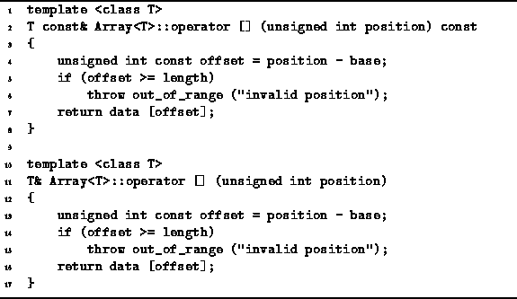

Data Structures and Algorithms
with Object-Oriented Design Patterns in C++
Data Structures and Algorithms
with Object-Oriented Design Patterns in C++
Program  defines two functions,
each of which overloads the array subscripting operation.
The purpose of overloading operator[]
is to allow arbitrary subscript ranges and to provide array bounds-checking.
The array subscripting operator,
operator[] is provided in two forms.
One which operates on a const array object
and returns a const reference to an object of type T;
and another which does the same for non-const objects.
The code in both instances is identical.
The position argument is checked and then
a reference to the selected item is returned.
In the event of an array-bounds error,
an outofrange
defines two functions,
each of which overloads the array subscripting operation.
The purpose of overloading operator[]
is to allow arbitrary subscript ranges and to provide array bounds-checking.
The array subscripting operator,
operator[] is provided in two forms.
One which operates on a const array object
and returns a const reference to an object of type T;
and another which does the same for non-const objects.
The code in both instances is identical.
The position argument is checked and then
a reference to the selected item is returned.
In the event of an array-bounds error,
an outofrange  exception is thrown.
exception is thrown.
We will assume that in a bug-free program there will never
be an array-bounds error.
Therefore, the running time of operator[] is a constant.
I.e., T(n)=O(1).
This is, after all, the sole reason for using an array--the time it takes to access the  element of the array is a constant!
element of the array is a constant!

Program: Array<T> Class Subscripting Function Definitions
 Copyright © 1997 by Bruno R. Preiss, P.Eng. All rights reserved.
Copyright © 1997 by Bruno R. Preiss, P.Eng. All rights reserved.